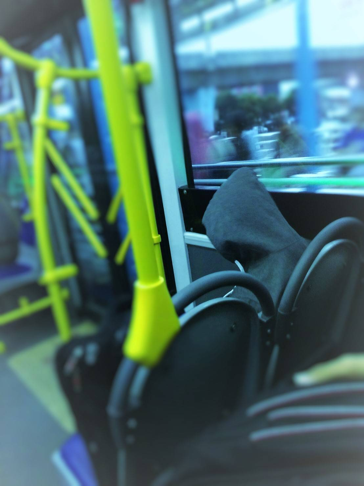
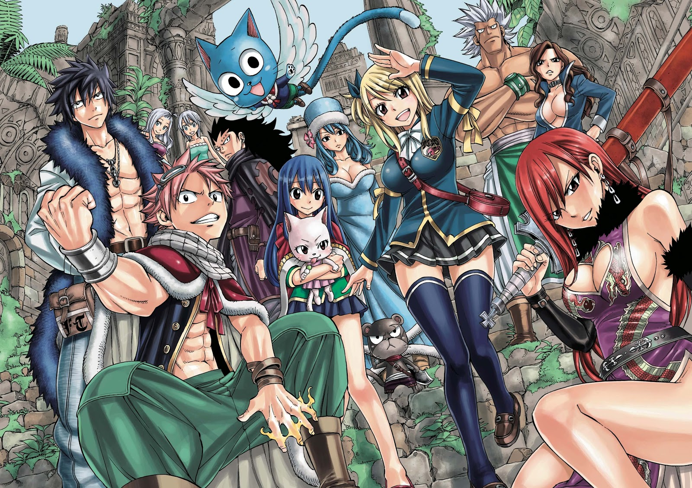

byTirtayasa
Jumat,24 Agustus 2018
NakaNime | 2018

1.One Punch Man
Serial Anime Televisi :
Sutradara 1 : Shingo Natsume (season 1)
Sutradara 2 :Chikara Sakurai (season 2)
Studio 1 :Madhouse (season 1)
Studio 2 : J.C. Staff (season 2)
Produser : Chinatsu Matsui,Nobuyuki Hosoya,Keita Kodama,Ayuri Taguchi
Penulis : Tomohiro Suzuki
Penggubah : Makoto Miyazaki
Tayang perdana : 5 Oktober 2015
Mangga:
Nama : One Punch Man
Penerbit : Shueisha
Genre : Aksi, Komedi, Superhero, Fiksi Manga
Demografi : Seinen
Majalah : Young Jump Web Comics
Tanggal terbit: 2009 – sekarang
One Punch Man ( ワンパンマン Wanpanman) adalah sebuah serial manga Jepang yang menceritakan seorang superhero yang bernama Saitama. One-Punch Man dibuat oleh seorang penulis yang asal jepang dengan nama samaran ONE yang mulai diterbitkan pada awal tahun 2009[2]. Serial ini segera menjadi viral sehingga mampu melampaui 7,9 juta hits pada bulan Juni 2012. One-Punch Man merupakan kontraksi wanpanchi ("One-Punch ") yang artinya satu pukulan.
Sebuah remake manga digital dari seri ini, yang diilustrasikan oleh Yusuke Murata, mulai dipublikasikan di situs Web Komedi Langsung Jumpa Shueisha di tahun 2012. Bab-bab tersebut dikumpulkan secara berkala dan dicetak ke dalam volume tankōbon, dengan dua belas dirilis pada tanggal 2 Desember 2016. Viz Media memiliki lisensi remake untuk serialisasi bahasa Inggris di majalah digital Weekly Shonen Jump.
Adaptasi televisi anime oleh Madhouse ditayangkan di Jepang antara bulan Oktober dan Desember 2015. Itu dijuluki dalam bahasa Inggris selama musim panas 2016, dan kemudian pada tahun itu sebuah musim kedua yang direncanakan diumumkan. Pada tanggal 25 September 2017, diumumkan bahwa mereka akan mengubah baik perusahaan produksi maupun direkturnya.

2.Fiary Tail S3
Serial Anime Televisi :
Sutradara : Shinji Ishihara
Studio 1 : A-1 Pictures
Studio 2 : Satelight (#1–175)
Studio 3 : Bridge (#176–)
Produser : Taihei Yamanishi
Tomonori Ochikoshi
Yoshikazu Beniya,Yōsuke Imai
Penulis : Masashi Sogo
Penggubah : Yasuharu Takanashi
Tayang perdana : 12 Oktober 2009
Mangga:
Nama : Fairy Tail
Penerbit : Kodansha
Pengarang : Hiro Mashima
Genre : Petualangan, fantasi
Demografi : Shōnen
Majalah : Weekly Shōnen Magazine
Tanggal terbit: 2 Agustus 2006
Film:
Fairy Tail the Movie: Phoenix Priestess (2012)
Fairy Tail: Dragon Cry (2017)
One Punch Man ( ワンパンマン Wanpanman) adalah sebuah serial manga Jepang yang menceritakan seorang superhero yang bernama Saitama. One-Punch Man dibuat oleh seorang penulis yang asal jepang dengan nama samaran ONE yang mulai diterbitkan pada awal tahun 2009[2]. Serial ini segera menjadi viral sehingga mampu melampaui 7,9 juta hits pada bulan Juni 2012. One-Punch Man merupakan kontraksi wanpanchi ("One-Punch ") yang artinya satu pukulan.
Sebuah remake manga digital dari seri ini, yang diilustrasikan oleh Yusuke Murata, mulai dipublikasikan di situs Web Komedi Langsung Jumpa Shueisha di tahun 2012. Bab-bab tersebut dikumpulkan secara berkala dan dicetak ke dalam volume tankōbon, dengan dua belas dirilis pada tanggal 2 Desember 2016. Viz Media memiliki lisensi remake untuk serialisasi bahasa Inggris di majalah digital Weekly Shonen Jump.
Adaptasi televisi anime oleh Madhouse ditayangkan di Jepang antara bulan Oktober dan Desember 2015. Itu dijuluki dalam bahasa Inggris selama musim panas 2016, dan kemudian pada tahun itu sebuah musim kedua yang direncanakan diumumkan. Pada tanggal 25 September 2017, diumumkan bahwa mereka akan mengubah baik perusahaan produksi maupun direkturnya.
1.One Punch Man
Serial Anime Televisi :
Sutradara 1 : Shingo Natsume (season 1)
Sutradara 2 :Chikara Sakurai (season 2)
Studio 1 :Madhouse (season 1)
Studio 2 : J.C. Staff (season 2)
Produser : Chinatsu Matsui,Nobuyuki Hosoya,Keita Kodama,Ayuri Taguchi
Penulis : Tomohiro Suzuki
Penggubah : Makoto Miyazaki
Tayang perdana : 5 Oktober 2015
Mangga:
Nama : One Punch Man
Penerbit : Shueisha
Genre : Aksi, Komedi, Superhero, Fiksi Manga
Demografi : Seinen
Majalah : Young Jump Web Comics
Tanggal terbit: 2009 – sekarang
One Punch Man ( ワンパンマン Wanpanman) adalah sebuah serial manga Jepang yang menceritakan seorang superhero yang bernama Saitama. One-Punch Man dibuat oleh seorang penulis yang asal jepang dengan nama samaran ONE yang mulai diterbitkan pada awal tahun 2009[2]. Serial ini segera menjadi viral sehingga mampu melampaui 7,9 juta hits pada bulan Juni 2012. One-Punch Man merupakan kontraksi wanpanchi ("One-Punch ") yang artinya satu pukulan.
Sebuah remake manga digital dari seri ini, yang diilustrasikan oleh Yusuke Murata, mulai dipublikasikan di situs Web Komedi Langsung Jumpa Shueisha di tahun 2012. Bab-bab tersebut dikumpulkan secara berkala dan dicetak ke dalam volume tankōbon, dengan dua belas dirilis pada tanggal 2 Desember 2016. Viz Media memiliki lisensi remake untuk serialisasi bahasa Inggris di majalah digital Weekly Shonen Jump.
Adaptasi televisi anime oleh Madhouse ditayangkan di Jepang antara bulan Oktober dan Desember 2015. Itu dijuluki dalam bahasa Inggris selama musim panas 2016, dan kemudian pada tahun itu sebuah musim kedua yang direncanakan diumumkan. Pada tanggal 25 September 2017, diumumkan bahwa mereka akan mengubah baik perusahaan produksi maupun direkturnya.